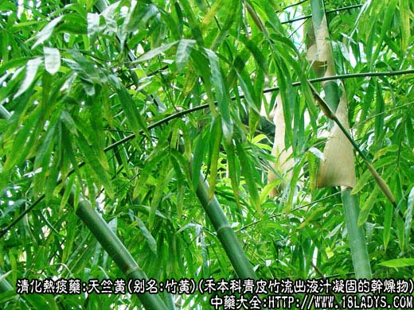
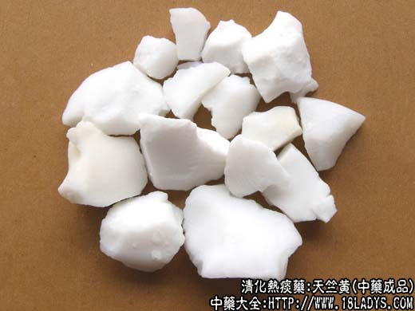
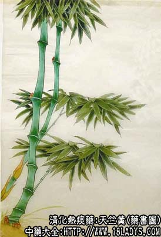

天竺黄为常用中药，始见于《蜀本草》。
别名：竹黄。
来源：为禾本科多年生常绿植物青皮竹或华思劳竹因病虫侵害，流出液汁长期存留在茎杆内，凝固成片块状干燥物体。
产地：主产于云南、广东、广西以及江南各地。国久产于越南、印度、印尼等地。
性状鉴别：呈不规则的细碎片块，乳白色、灰白色或灰蓝色。乳白色者断面平滑显光泽。灰蓝色者稍粗糙无光泽。质略轻，松脆易碎裂，吸水性强，但不溶于水。投入水中可产生气泡。置舌上有吸附性粘舌感。气无，味淡，微有清凉感。
以块片状，少碎屑，色乳白，光亮干燥者为佳。
主要成分：含硅酸、钾、钙等。
功效与作用：清热、镇静、祛痰。
炮制：生用。
性味：甘、寒。
归经：入心、肝、肺经。
功能：清热祛痰、驱风热、定惊痫。
主治：中风不语，热病神昏谵语，小儿急惊抽风，烦躁不安，因痰热引起的咳喘等症。
性床应用：1、多用于小儿热性抽搐惊痫（甚至角弓反张），神志不清，并有咳嗽气促痰稠者，用天竺黄清热豁痰、镇静止痫，常配贝母、胆南星、花粉、僵蚕、钩藤、菖蒲等加强清化热痰和镇痉开窍的作用，并随证配伍清热药，方如竺黄汤。
2、成人热病神昏，也可用竺黄协助清热。
3、用于中风痰厥（脑血管意外），表现突然昏倒、不省人事、两拳紧握、鼾睡、呼吸不爽、痰出困难，用天竺黄豁痰，并配菖蒲、丹参、三七等，方如消痰治风方。
用量：4.5~9g。
处方举例：竺黄汤：天竺黄6g、僵蚕3g、菖蒲2.4g、法夏4.5g、胆南星2.4g、天花粉9g、川贝母4.5g、钩藤9g、知母6g，水煎服。
消痰治风方：天竺黄9g、制南星6g、石菖蒲4.5g、法夏9g、丹参12g、三七末3g（冲）、鸡血藤15g、陈皮6g、茯苓12g、炙甘草3g，水煎服。
注：过去采收竹黄，多用火烧竹林，使竹受暴热伤害，产生竹沥，溢于节中，凝固而成，但浪费太大。现已不采用这种方法。经产地群众发现被竹蜂咬洞居后的竹节中，多有竹黄生成。经采用人工钻孔法促使竹黄生成并取得成功。
成分：主含氢氧化钾1.1%、硅土90.5%、三氧化二铝0.9%、三氧化儿铁等物质。现上海市已进行人工合成。